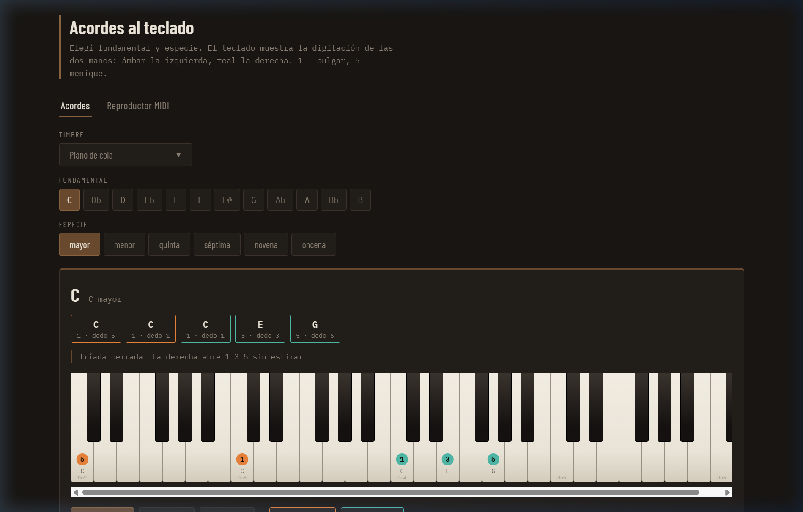
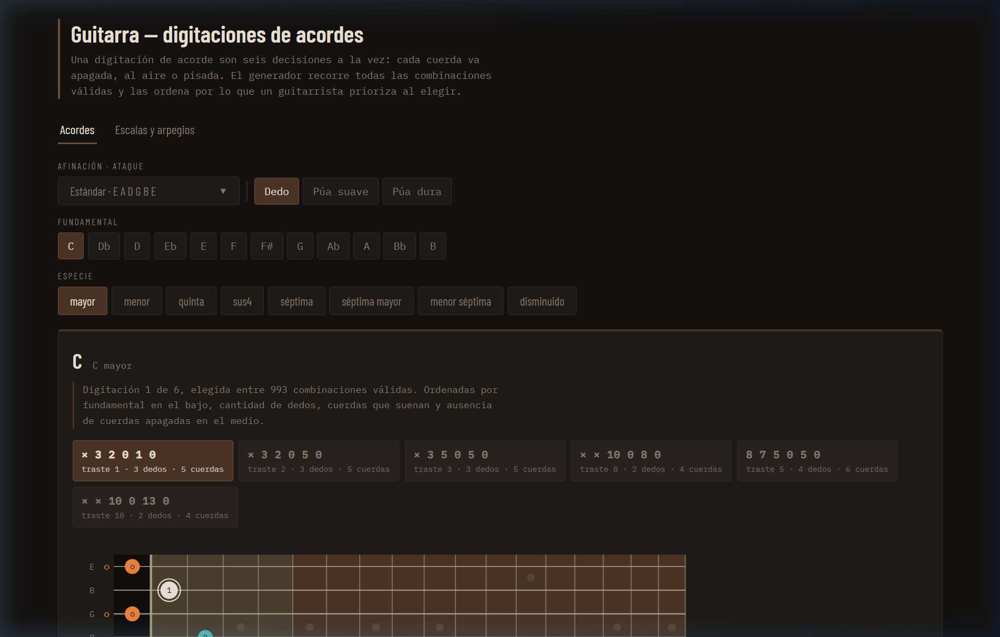
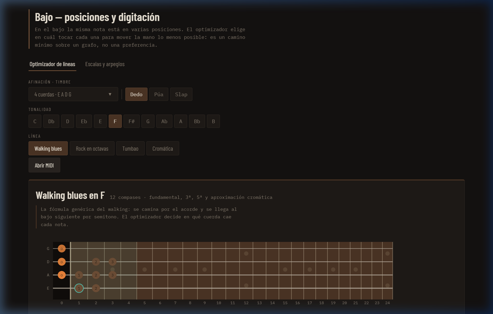
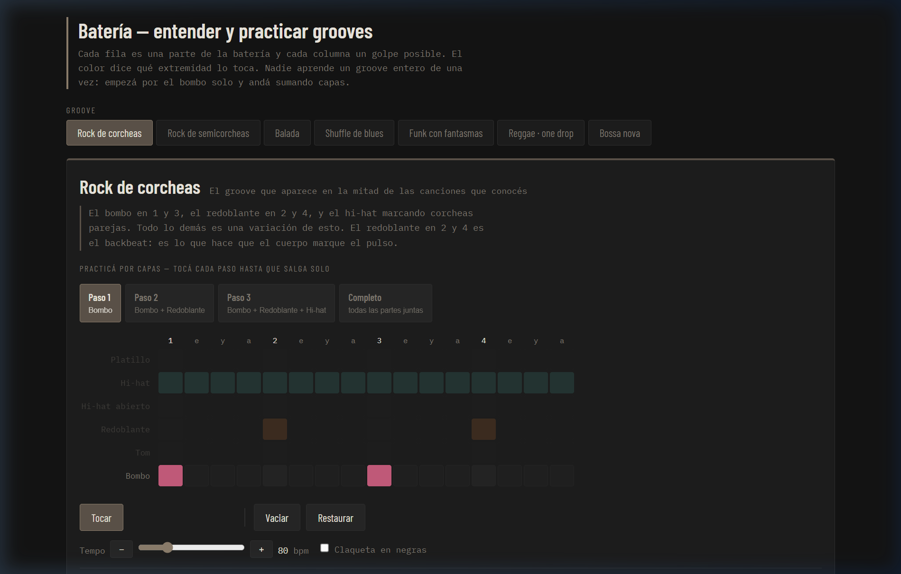
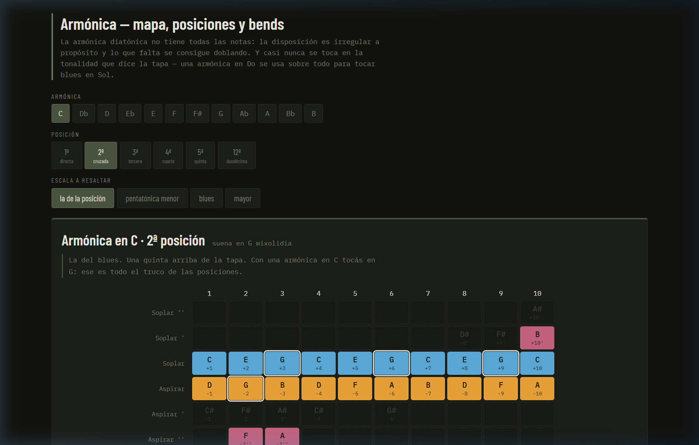
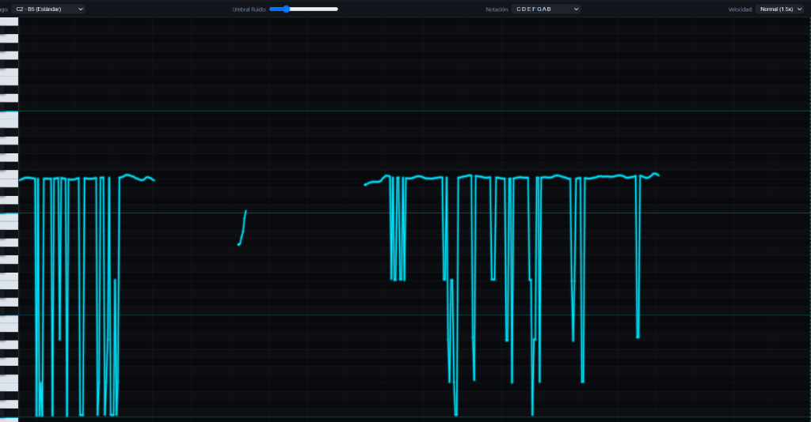

🎹 Teclado & MIDI
Visualiza cualquier acorde con la digitacion exacta de ambas manos:
ambar para la izquierda, teal para la derecha. Carga tus propios archivos
.mid, controla el tempo y practica mano por mano con loop por compases.

🎸 Guitarra
Generador inteligente de digitaciones: evalua todas las combinaciones posibles y las ordena por ergonomia de la mano. Detecta cejillas automaticamente. Incluye escalas y las cinco posiciones de la pentatonica.
Abrir app
🎸 Bajo
Optimizador de posiciones de mastil: dada una linea de bajo, calcula que cuerda y traste minimiza el desplazamiento de la mano. Soporte para 4, 5 y 6 cuerdas con multiples afinaciones.
Abrir app
🥁 Bateria
Grooves interactivos con practica por capas: empieza con el bombo solo, suma el redoblante y finalmente el hi-hat. Codigo de color por extremidad para distinguir que mano o pie ejecuta cada golpe.
Abrir app
🎷 Armonica
Mapa completo de agujeros Richter para cualquier tonalidad: notas sopladas, aspiradas y bends calculados por fisica de lengüetas. Buscador de que armonica usar segun la tonalidad del tema, con 6 posiciones explicadas.
Abrir app
🎤 Monitor Vocal & Pitch
Entrenamiento y afinacion vocal continua en tiempo real con algoritmo MPM/YIN. Visualiza tu curva melodica sobre un piano roll interactivo, mide la desviacion en centesimas, ajusta umbrales de ruido y practica con modo simulacion.
Abrir app